UX Process in SDLC
Design Cycle
The UX process closely ties in with the vision and related requirements. The prerequisite of understanding the users becomes a key point along with the upcoming trends of technology that helps achieve the goal.
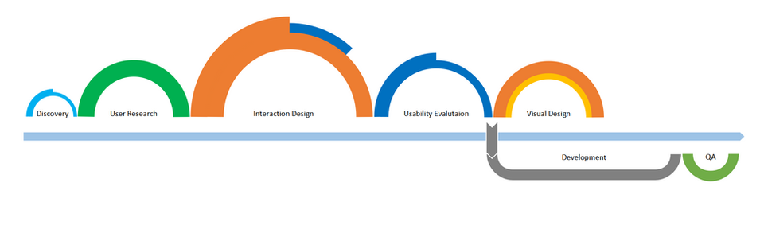
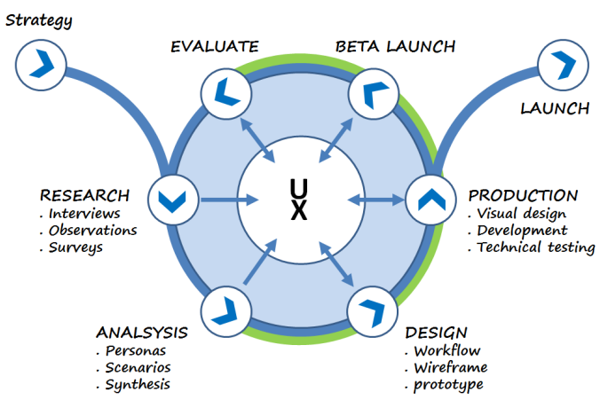
Journey Map / Order Outlook
User journey to research insights and gather findings to arrive at opportunities and pain points that can be converted to meaningful design solutions
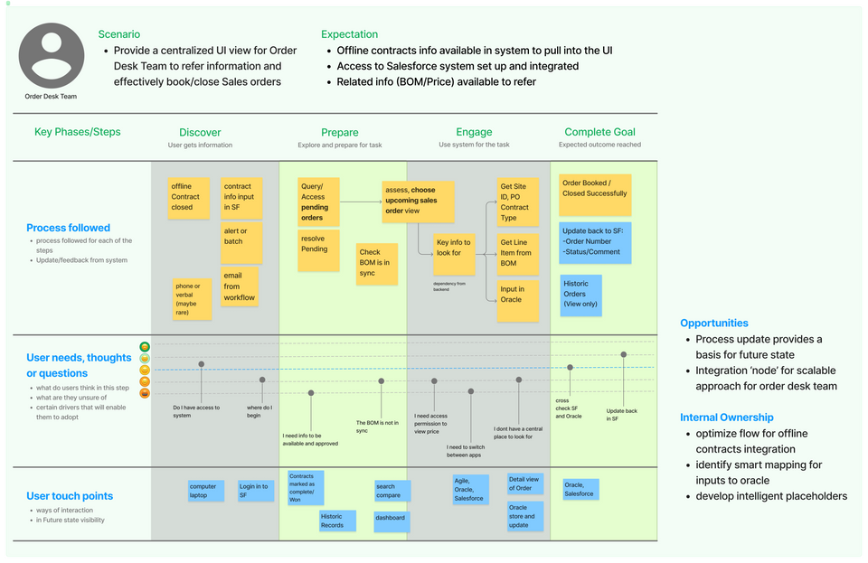
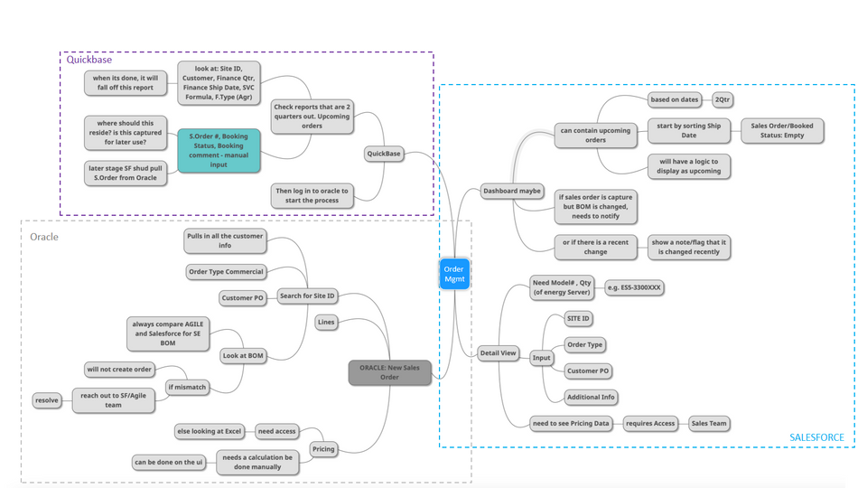
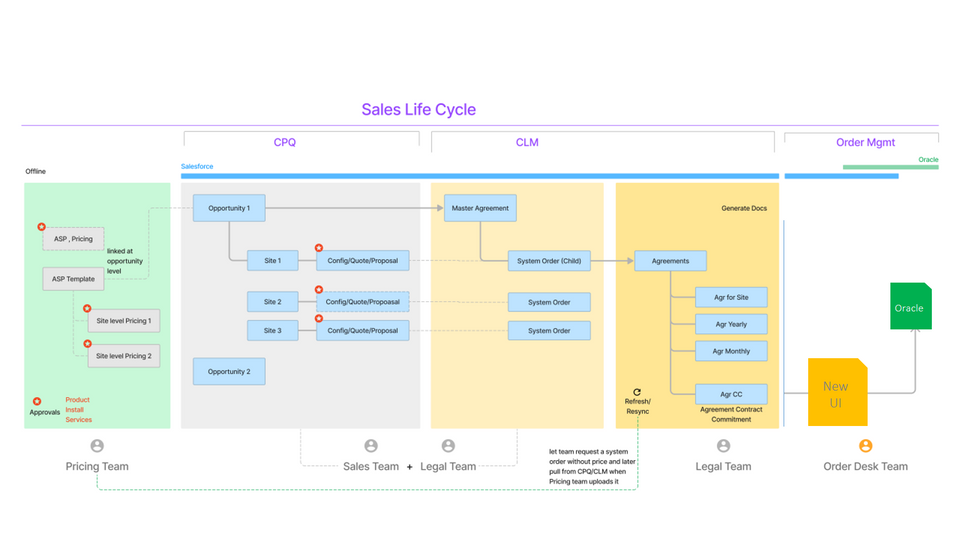
IA, Navigation
Marvin
Mindmap to capture requirement to highlight related components. IA and navigation evolved as per the requirement.
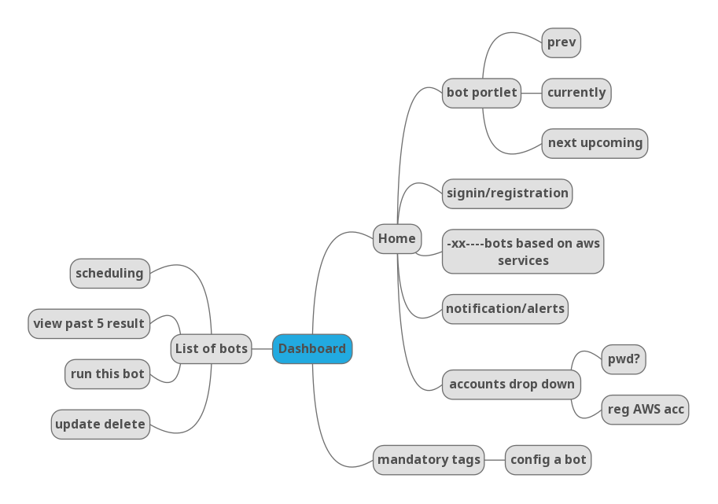
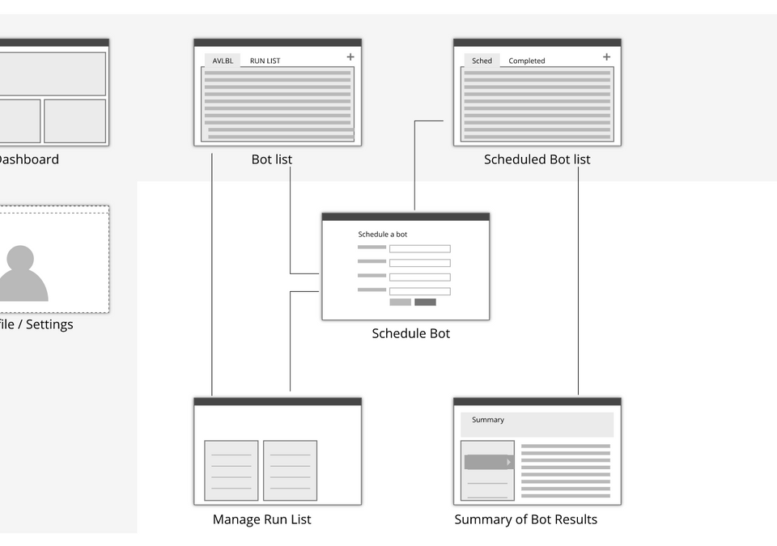
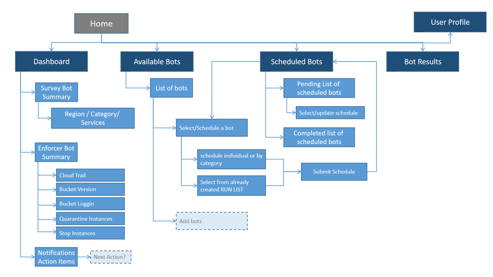
Task Flow and IA/Hierarchy
Microsoft, Scientist Workbench
Analysis of user scenarios and workflows revealed a task flow and hierarchy arrived at by chunking/IA
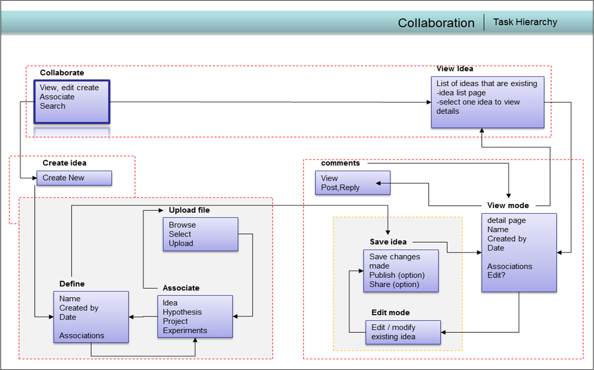
UX Strategy
ShoutMD
A Layered approach for creating a White labeled UX community platform for enabling Franchisors and Franchisees to collaborate and improve business using the power of community interactions
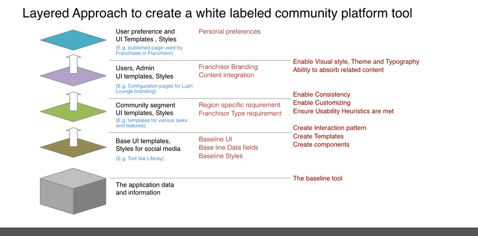
Persona
Sample
A Layered approach for creating a White labeled UX community platform for enabling Franchisors and Franchisees to collaborate and improve business using the power of community interactions
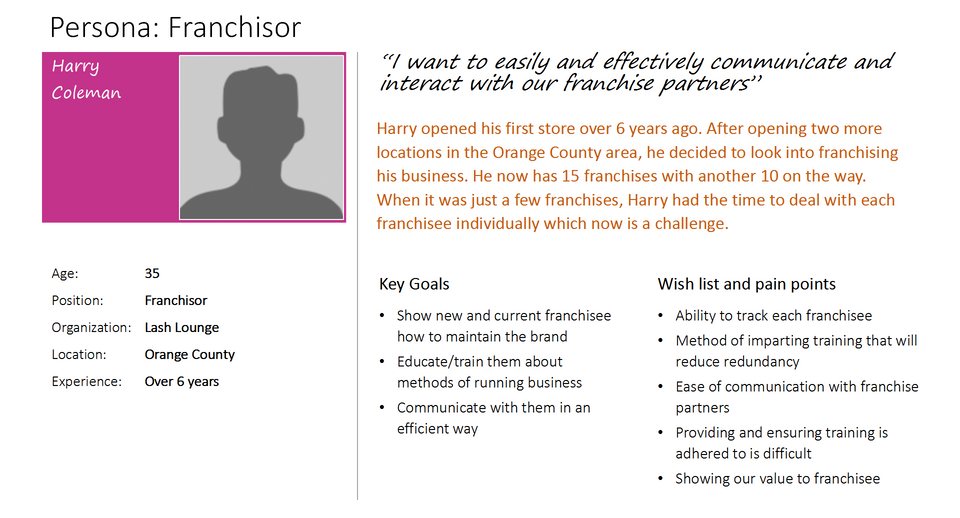
Experience Journey Map
Sample
Initial interactions with the users, staff and patients provided useful insights that was used to create the journey map for improving the hospital experience.
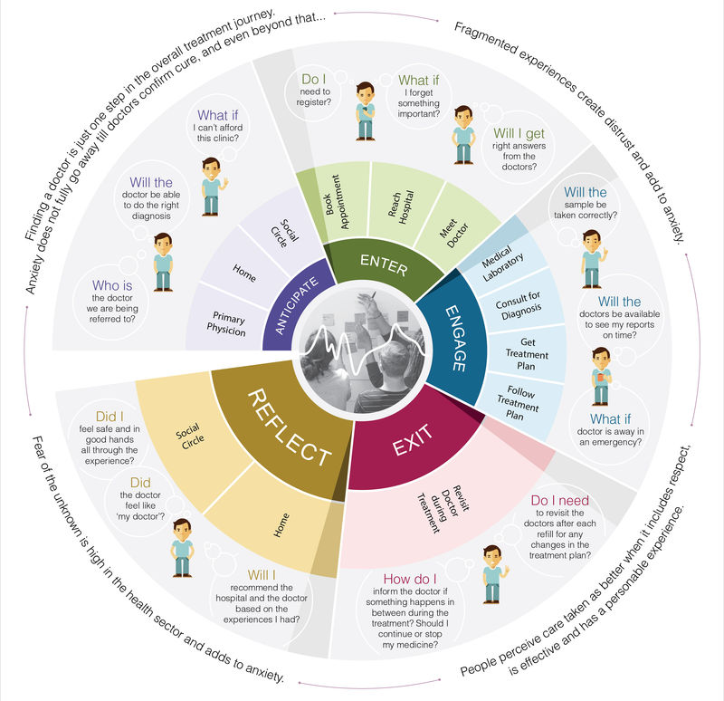
IA / Sitemap
Sample
The Experience Map provided insights to come up with a road map and focus on touch points that the client identified as critical to patient experience. The IA highlights those touchpoints.